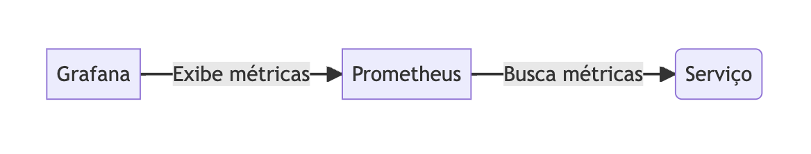
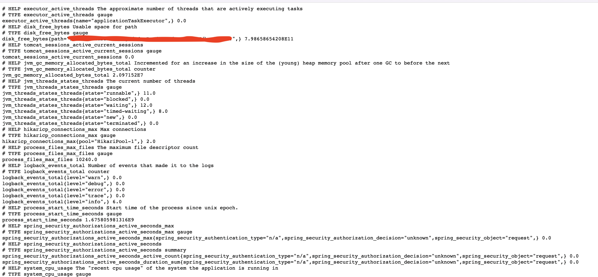

Fala pexadas!! Tudo bom com vocês?
Introdução
Observabilidade é a capacidade de medir e monitorar os estados de um sistema. É uma medida de quanto de um sistema pode ser observado e medido para obter informações sobre seu estado atual. Quanto maior a observabilidade, mais informações sobre o sistema estarão disponíveis para serem usadas para fins de tomada de decisão. Ela também é importante para o entendimento do comportamento de um sistema em tempo real.
Nos dias atuais, é muito importante implementar a observabilidade para sistemas de computação, como aplicações corporativas e serviços de nuvem. Com a observabilidade, os administradores do sistema podem monitorar e gerenciar os sistemas em tempo real, acompanhando o desempenho, a disponibilidade e o uso de recursos. Isso permite que os problemas sejam detectados e resolvidos rapidamente, antes que eles causem impacto significativo.
Roadmap
Nesta mini-série, iremos abordar como implementar e obter métricas nos seus sistemas usando Spring Boot, Prometheus e Grafana. Vamos dividir em 3 passos para separar os entendimentos necessários para a realização dessa tarefa.
1. Como preparar seu sistema com Spring Boot
2. Como configurar o Prometheus e o Grafana
3. Como criar métricas customizadas para seu sistema.
Explicando essa jornada um pouco melhor, iremos fazer o seguinte.

O Grafana será responsável por exibir as métricas que serão coletadas pelo Prometheus, que busca as métricas no serviço. Mas na construção da solução iremos fazer de trás para frente. Primeiro expondo as métricas no serviço, depois configurando o Prometheus para buscar essas métricas, e por fim, exibindo no Grafana por paineis e dashboards.
Pré-Requisitos
Nesse artigo, vamos precisar ter um entendimento mínimo sobre Docker e Spring Boot.
1 - Preparando seu sistema
Para esse caso, iremos utilizar um sistema co Spring Boot 3 que já está implementado, utilizando a linguagem Kotlin. Não se preocupe com a linguagem, porque vamos demonstrar como fazer os códigos com Java também.
Para o primeiro passo, precisamos entender o que precisamos fazer para preparar o nosso sistema para expor as métricas do nosso sistema. E para iniciar, precisamos adicionar uma biblioteca no nosso sistema, que é capaz de fazer as configurações iniciais sem muitas dificuldades. Estamos falando do biblioteca do Actuator.
Para incluir a biblioteca do Actuator, basta inserir o código abaixo:
para Maven:
1 | <dependency> |
ou para Gradle:
1 | implementation("org.springframework.boot:spring-boot-starter-actuator") |
Essa lib permite que seja disponibilizado uma série de beans pré-configurados para expor as métricas do nosso sistema.
Agora, precisamos expor os endpoints dessa lib, fazendo com que as configurações existentes na biblioteca sejam corretamente configurados. Para esse trabalho vamos alterar o arquivo localizado em src/main/resources com o nome de application.yml ou application.properties.
yaml:
1 | management: |
properties:
1 | =health,metrics,prometheus |
As linhas acima ativam as configurações que farão a configuração de toda a parte de métricas do Spring Boot para nós. Com essas linhas de configuração já é possível acessar o endpoint de métricas do seu sistema acessando http://localhost:8080/actuator/prometheus
Ao acessar esse caminho será possível ver algo parecido com isso:

A primeira etapa do nosso trabalho está concluída. Dessa forma as métricas do nosso serviço estão expostas e estão prontas para serem consumidas pelo Prometheus e por fim visualizadas pelo Grafana.
2 - Configurando Prometheus e Grafana
Para a configuração do Prometheus e do Grafana, iremos analisar o arquivo docker-compose.yaml criado para subir essas aplicações para nós. Vamos destrinchar o arquivo passo a passo.
docker-compose.yaml
1 | version: '3.3' |
O arquivo acima, está dividido em 4 grandes blocos: Definição da versão do arquivo, redes, volumes e serviços.
Na linha 1, definimos a versão do docker-compose que iremos utilizar para escrever o arquivo.
Nas linhas 2 a 4, estamos definindo uma rede dentro do docker nomeada de interna, e que utilizará o driver bridge.
Nas linhas 5 a 7, estamos definindo um volume para o prometheus e para o grafana, para que os dados não sejam perdidos caso os containers precisem ser reiniciados.
Agora vem o bloco de serviços. E é aqui que precisamos nos concentrar.
O primeiro serviço definido foi o do prometheus. Ele utiliza uma imagem que vem direto do http://hub.docker.com/ para funcionar, e definimos os volumes que serão utilizados por esse serviço. O arquivo definido por prometheus.yml está disposto abaixo.
prometheus.yml
1 | global: |
Depois desses arquivos criados, basta navegar até a pasta onde estão os arquivos e rodar o comando:
1 | docker-compose up -d |